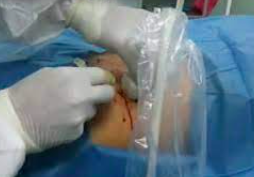

COLECCIONES
Drenaje de colecciones
Las colecciones abdominales consisten en una acumulacion anormal de liquidos dentro del abdomen que generan un estado toxoinfeccioso que puede generar riego de vida. se producen posterior a cirugias o por varias enfermedades generalmente del tracto digestivo. Hoy por hoy se pueden resolver de forma miniinvasiva sin necesidad de anestesia general y daño a la pared abdominal
Se puede realizar dependiendo el caso con anestesia local con apoyo de sedacion sin necesidad de anestesia general. Se precisa de un establecimiento que disponga de un servicio de imagenes completo.
Estos drenajes se pueden hacer con ultrasonido en la unidad del paciente o con arco en c (radioscopia continua) en quirofano o en tomografo o combinando metodos